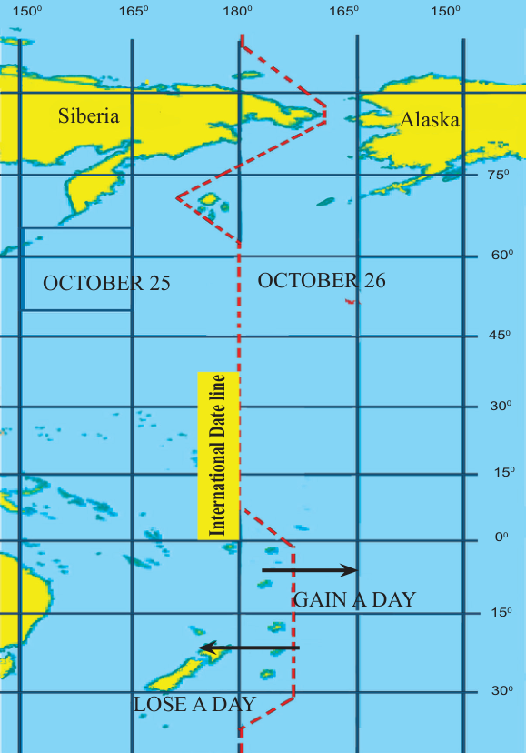

The International Date Line
The International Date Line (IDL) is an imaginary line where date is changed or calendar day begins. This line is internationally agreed upon, and follows the meridian of 180° W (or E) longitude except where it crosses land surface (Figure 3.17). However, the IDL is not straight for the purpose of avoiding crossing land masses which would cause a country to have two different days at the same time.

Figure 3.17: The International Date LineActivity 3.10
 Activity 3.10
Activity 3.10Design a pictorial chart giving information of the important parallels and meridians of the Earth.
40